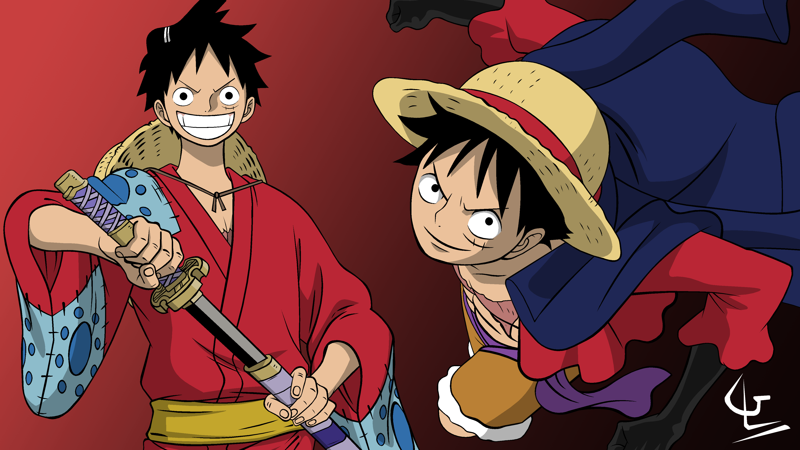
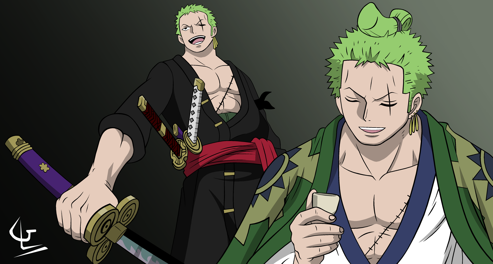
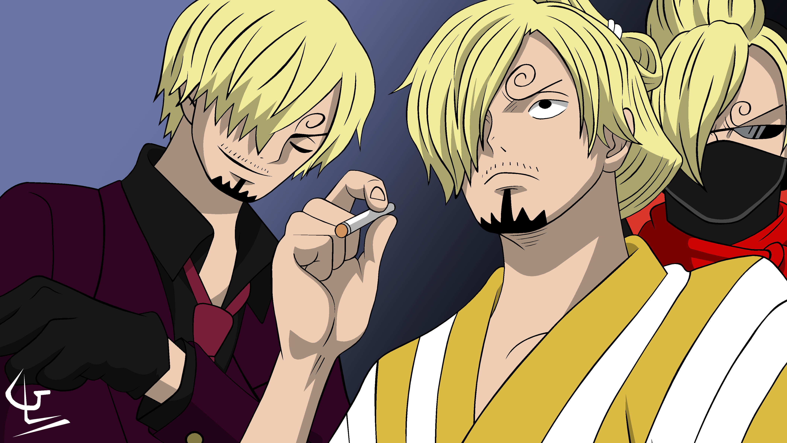

*One Piece* is a Japanese anime and manga series created by Eiichiro Oda. It follows Monkey D. Luffy, a young pirate with a rubber-like body, as he sails the Grand Line with his crew, the Straw Hat Pirates, in search of the legendary treasure, the One Piece, to become the Pirate King. The story is filled with adventure, powerful enemies, and deep friendships.
Monkey D. Luffy – The cheerful and fearless captain of the Straw Hat Pirates, Luffy has a rubber body due to the Gum-Gum Fruit and dreams of becoming the Pirate King.
Roronoa Zoro – The crew’s swordsman and first mate, Zoro wields three swords in his unique Santoryu style and aims to become the world's strongest swordsman.
Sanji – The Straw Hats’ cook, Sanji is a master of martial arts, fighting with powerful kicks while upholding his chivalrous code and dreaming of finding the All Blue.
